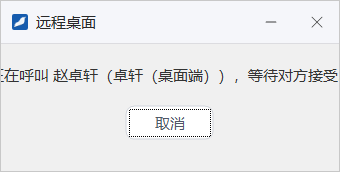
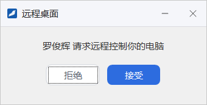
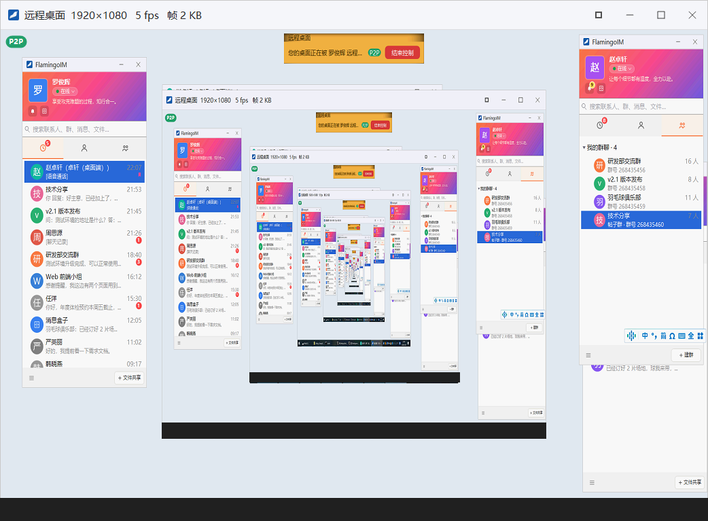
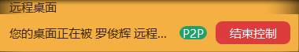

远程桌面
远程桌面让你在征得同事同意后，用自己的鼠标和键盘直接操作同事的电脑，适合远程协助排查问题、帮同事完成设置。
- 适用：全体员工
- 需要：双方都在线；被控制的一方必须点「接受」
- 入口：单聊窗头部的「远程桌面」按钮
发起远程控制请求
- 打开与对方的单聊窗，点头部右侧的显示器图标（鼠标停在上面提示 远程桌面）。它位于电话、摄像机两个图标的右边。
- 屏幕上出现等待窗口「正在呼叫 某某，等待对方接受…」。对方回应之前，可以点 取消 撤回请求。
- 对方点 接受 后，你的电脑上会打开远程桌面窗口，显示对方的屏幕。


被控制的一方会收到「某某 请求远程控制你的电脑」窗口，点 接受 同意，点 拒绝 拒绝。对方拒绝、取消、不在线或长时间没有回应时，发起方会看到相应的提示，例如「对方拒绝了远程桌面请求。」「远程桌面请求超时。」
只接受你信任的请求接受之后，对方可以像坐在你电脑前一样操作鼠标和键盘，能看到你屏幕上的全部内容。处理敏感资料前请先结束控制。
远程桌面窗口
远程桌面窗口里显示的是对方的整个屏幕。在画面上移动鼠标、单击、拖动和打字，操作的都是对方的电脑。标题栏显示对方屏幕的分辨率、当前帧率和每帧的数据量，如「远程桌面 1920×1080 5 fps 帧 2 KB」；画面左上角显示「P2P」时，说明双方是直接连接，没有经过服务器中转。

截图里为什么有层层嵌套的画面演示时两个账号登录在同一台电脑上，远程桌面窗口本身也出现在被控制的屏幕里，于是画面中又套着画面。两台不同的电脑之间不会出现这种情况。画面底部的深色条是截图后做的遮挡处理。
全屏查看
- 点标题栏最小化按钮左侧的全屏图标，或按 F11，进入全屏；再按 F11 或 Esc 退出全屏。
- 全屏时屏幕顶部居中有一条工具条，显示连接状态，并提供 退出全屏 和 断开 两个按钮。
被控制的一方
接受请求后，被控制一方的屏幕顶部会出现提示条「您的桌面正在被 某某 远程控制」，提示条右侧有红色的 结束控制 按钮，直连时还显示「P2P」。整个控制期间这条提示条置顶显示，方便随时查看和终止。

结束远程控制
双方都可以随时结束：
- 发起方关闭远程桌面窗口，或在全屏工具条上点 断开。
- 被控方点提示条上的 结束控制。
任何一方结束后，这次远程控制即告结束，被控方屏幕顶部的提示条随之消失。被控方使用客户端的「锁屏」功能时，正在进行的远程控制也会立即结束。